건설재료시험산업기사 (2015-03-08 기출문제)
1과목: 콘크리트공학
1. 방사선 차폐용 콘크리트의 물-결합재비는 몇 %이하를 원칙으로 하는가?
- 45%
- 50%
- 55%
- 60%
(정답률: 77%)

2. 콘크리트 치기를 한 후 응결이 종료될 때까지 발생하는 초기균열에 해당되지 않는 것은?
- 온도균열
- 거푸집 변형에 따른 균열
- 침하수축균열
- 플라스틱수축균열
(정답률: 72%)
3. 거푸집에 작용하는 콘크리트의 측압에 대한 일반적인 설명으로 틀린 것은?
- 콘크리트의 단위중량이 증가할수록 측압은 증가한다.
- 타설속도가 빨라질수록 측압은 증가한다.
- 타설되는 콘크리트의 온도가 증가할수록 측압은 증가한다.
- 플라이애시나 고로슬래그를 사용하면 측압은 증가한다.
(정답률: 40%)
4. 콘크리트 재료에 대해 계량의 허용오차를 나타낸 것으로 틀린 것은?
- 골재 : ±3%
- 혼화재 : ±2%
- 시멘트 : ±2%
- 혼화제 : ±3%
(정답률: 71%)
5. 기존 콘크리트 구조물의 철근부식 상황을 파악할 수 있는 비파괴시험방법이 아닌 것은?
- 초음파법
- 분극저항법
- 자연전위법
- 전기저항법
(정답률: 50%)
6. 일반 콘크리트 비비기에 대한 사항으로 잘못된 것은?
- 비비기 시간은 시험에 의해 정하되 가경식 믹서는 1분 30초 이상, 강제식 믹서는 1분 이상을 표준으로 한다.
- 비비기는 미리 정해 둔 비비기 시간 이상 계속해서는 안 된다.
- 비비기를 시작하기 전에 미리 믹서내부를 배합비율이 비슷한 모르타르로 자연스럽게 부착시켜 놓는다.
- 연속믹서를 사용할 경우, 비비기 시작 후 최초에 배출되는 콘크리트는 사용해서는 안 된다.
(정답률: 59%)
7. 콘크리트의 배합강도를 결정할 때 사용하는 표준편차에 대한 아래 표의 설명에서 ( )에 적합한 수치는?
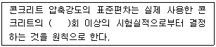
- 15
- 20
- 25
- 30
(정답률: 69%)
8. 콘크리트의 슬럼프 시험에서 슬럼프콘에 콘크리트를 채우기 시작하고 나서 슬럼프콘의 들어 올리기를 종료할 때까지의 시간으로 옳은 것은?
- 1분 이내로 한다.
- 2분 이내로 한다.
- 3분 이내로 한다.
- 4분 이내로 한다.
(정답률: 85%)
9. 다음 중 콘크리트 양생에 관한 설명으로 옳지 않은 것은?
- 콘크리트가 충분히 경화할때까지 충격과 과대한 하중을 가하지 않도록 한다.
- 서리, 일광의 직사, 바람, 비에 대하여 콘크리트의 노출면을 보호한다.
- 타설이 끝난 콘크리트는 일정기간동안 높은 온도로 양생해야 한다.
- 타설이 끝난 콘크리트는 일정기간동안 습윤양생을 실시한다.
(정답률: 79%)
10. 콘크리트 압축강도시험에서 공시체에 하중을 가하는 속도는 압축응력도의 증가율이 매초 얼마가 되도록 하여야 하는가?
- (6±0.4)MPa
- (0.6±0.4)MPa
- (0.6±0.04)MPa
- (0.06±0.04)MPa
(정답률: 72%)
11. 댐콘크리트의 설계기준압축강도는 일반적인 경우 재령 몇 일의 압축강도를 기준으로 하는가?
- 14일
- 28일
- 56일
- 91일
(정답률: 62%)
12. 강도 시험용 공시체를 이용하여 할렬인장강도 시험을 실시하였더니 95kN의 하중에서 파괴되었다. 인장강도는 얼마인가? (단, 공시체의 지름은 100mm, 높이는 200mm)
- 2.0 MPa
- 3.0 MPa
- 4.0 MPa
- 5.0 MPa
(정답률: 66%)
13. 다음의 시방배합을 기준으로 현장 배합을 할 경우 현장배합의 각 재료의 단위량으로 적합하지 않은 것은? (단, 현장 잔골재 중에서 5mm 체에 남는 것, 현장 굵은 골재 중에서 5mm체를 통과하는 것은 없으며, 잔골재의 흡수율은 1.4%, 함수율은 3.9%, 굵은 골재의 흡수율은 0.5%, 함수율은 1.0% 이다.)
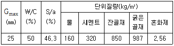
- 잔골재량(S)은 871 kg 이다.
- 굵은골재량(G)은 992 kg 이다.
- 물량(W)은 134 kg 이다.
- 시멘트량(C)은 268 kg 이다.
(정답률: 55%)
14. 해양콘크리트에 대한 일반적인 설명으로 틀린 것은?
- 해양콘크리트 구조물에 쓰이는 콘크리트의 설계기준강도는 24MPa 이상으로 하여야 한다.
- 해양콘크리트 구조물에 사용되는 철근의 부식을 방지하기 위해 콘크리트의 피복두께를 크게 하는 것이 좋다.
- 해양콘크리트 구조물에 사용되는 철근의 부식을 방지하기 위해 콘크리트의 균열폭을 적게 하여야 한다.
- 해양에서 현장 타설 콘크리트 시공을 할 경우, 해수의 오탁을 일으키지 않는 공법을 선정하여야 한다.
(정답률: 54%)
15. 콘크리트의 양생시 주의할 사항으로 잘못된 것은?
- 표면을 충분한 습윤 상태로 유지해야 한다.
- 적당한 온도를 유지해 주어야 한다.
- 습윤과 건조를 반복시켜야 콘크리트의 건조수축을 줄일 수 있다.
- 충격이나 하중으로부터 보호해 주어야 한다.
(정답률: 84%)
16. 굳지 않는 콘크리트 중의 전 염화물이온량은 원칙적으로 얼마 이하로 규정하고 있는가?
- 0.3 kg/m3
- 0.4 kg/m3
- 0.5 kg/m3
- 0.6 kg/m3
(정답률: 72%)
17. 다음 관리도의 종류 중 정규분포이론을 적용한 계량값의 관리도에 속하지 않는 것은?
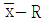
관리도(평균값과 범위의 관리도)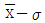
관리도(평균값과 표준편차의 관리도)- x 관리도(측정값 자체의 관리도)
- P 관리도(불량률 관리도)
(정답률: 87%)
18. 압축강도의 시험실적이 없는 현장에서 콘크리트의 설계기준압축강도가 28MPa인 경우 배합강도는?
- 35 MPa
- 36.5 MPa
- 38 MPa
- 39.5 MPa
(정답률: 90%)
19. 수중 콘크리트의 구성재료에 대한 설명으로 틀린 것은?
- 수중 불분리성 콘크리트의 경우 굵은골재 최대치수는 40㎜이하를 표준으로 한다.
- 트레이로 시공하는 일반 수중 콘크리트의 슬럼프는 100~150㎜ 범위로 한다.
- 수중 불분리성 콘크리트의 공기량은 4% 이하로 하여야 한다.
- 지하 연속벽에 사용하는 수중 콘크리트의 경우, 지하연속벽을 가설만으로 이용할 경우에는 단위 시멘트량은 300 kg/m3 이상으로 하여야 한다.
(정답률: 30%)
20. 다음은 포장용 시멘트 콘크리트의 배합설계 기준이다. 틀린 것은?
- 설계기준 휨강도 : 4.5 MPa 이상
- 공깅연행 콘크리트의 공기량 : 4~6 퍼센트
- 굵은골재 최대치수 : 40㎜이하
- 단위수량 : 180 kg/m3 이하
(정답률: 57%)
2과목: 건설재료 및 시험
21. 다음 중 콘크리트용 골재의 시험방법이 아닌 것은?
- 마모시험
- 안정성시험
- 신도시험
- 단위용적질량시험
(정답률: 72%)
22. 토목섬유(Geotextiles)의 주된 기능이 아닌 것은?
- 혼합기능
- 배수기능
- 분리기능
- 보강기능
(정답률: 60%)
23. 콘크리트용 혼화제인 방수제의 방수원리에 대한 설명 중 틀린 것은?
- 미세한 물질을 혼입하여 공극을 물리적으로 충전시킨다.
- 가스를 발생시켜 기포를 도입한다.
- 공극에 수밀성을 높이는 막을 형성한다.
- 수화반응을 촉진시켜서 생기는 시멘트 겔에 의해 공극을 충전시킨다.
(정답률: 58%)
24. 플라이애시에 대한 품질시험 항목으로 볼 수 없는 것은?
- 응결시간
- 분말도
- 강열감량
- 습분
(정답률: 56%)
25. 다음 중에서 폭발력이 가장 강하고 수중에서도 폭발할 수 있는 다이너마이트(dynamite)는?
- 규조토 다이너마이트
- 교질 다이너마이트
- 스트레이트 다이너마이트
- 분말상 다이너마이트
(정답률: 84%)
26. 다음 중 소요의 단위 수량을 현저히 감소시키고, 내동해성을 개선시키는 혼화제는?
- 촉진제
- 수중 불분리성 혼화제
- 건조수축 저감제
- 고성능 AE 감수제
(정답률: 75%)
27. 고무혼입 아스팔트를 스트레이트 아스팔트와 비교 했을 때의 설명 중 옳은 것은?
- 응집성 및 부착력이 크다.
- 감온성이 크다.
- 마찰계수가 작다.
- 탄성 및 충격저항이 작다.
(정답률: 39%)
28. 목재의 인공건조법 속하지 않는 것은?
- 증기법
- 열기법
- 끓임법
- 수침법
(정답률: 76%)
29. 목재의 강도 중 가장 큰 것은?
- 섬우에 직각방향의 압축강도
- 섬유방향의 휨강도
- 섬유방향의 압축강도
- 섬유방향의 인장강도
(정답률: 63%)
30. 천연석유가 암석의 갈라진 틈에 스며들어가 지열이나 공기등의 작용으로 오랫동안 화학변화를 일으켜 생긴 아스팔트는?
- 샌드 아스팔트(Sand asphalt)
- 아스팔타이트(Asphaltite)
- 록 아스팔트(Rock asphalt)
- 레이크 아스팔트(Lake asphalt)
(정답률: 68%)
31. 높이가 2.10m 인 목재창고에 시멘트를 수직으로 쌓아 올리려고 한다. 최대로 쌓아 올릴 수 있는 포대 수는? (단, 시멘트 1포의 높이는 20cm 이다.)
- 7포
- 9포
- 11포
- 13포
(정답률: 50%)
32. 시멘트 밀도에 대한 설명 중 틀린 것은?
- 석고 함유량이 많아지면 밀도는 커진다.
- 시멘트의 저장기간이 길어지면 밀도는 작아진다.
- 시멘트 클링커의 구성 화합물의 조성에 따라 밀도가 달라진다.
- 시멘트가 풍화되면 밀도는 작아진다.
(정답률: 54%)
33. 골재의 조립률을 구하기 위해 사용하는 표준체의 종류에 포함되지 않는 것은?
- 40㎜체
- 25㎜체
- 0.3㎜체
- 0.15㎜체
(정답률: 73%)
34. 석재에 대한 설명으로 틀린 것은?
- 안산암은 강도 및 내구성이 비교적 크다.
- 안산암은 퇴적암에 속한다.
- 화강암은 조직이 균일하고 내구성 및 강도가 크다.
- 안산암은 절리가 있기 때문에 큰 재료를 얻기 어렵다.
(정답률: 59%)
35. 수화열을 작게하기 위하여 시메트의 화학 조성 중에서 C3S와 C3A의 양을 제한하고 그 대신 장기강도 발현을 위하여 C2S의 양을 적당량 증가시킨 시멘트는?
- 알루미나시멘트
- 보통포틀랜드시멘트
- 중용열포틀랜드시멘트
- 조강포틀랜드시멘트
(정답률: 80%)
36. 도로의 표츠공사에 사용되는 가열 아스팔트 혼합물의 안정도 시험은 다음의 어느 방법으로 판정해야 하는가?
- 마이샬(Marshall) 시험
- 클리브랜드(Cleveland) 개방식 시험
- 앵글러(Engler) 시험
- 레드우드(Red wood) 시험
(정답률: 75%)
37. 목재의 함수율(질량비, %)과 압축강도의 관계를 나타내는 아래의 그림에서 A점은?
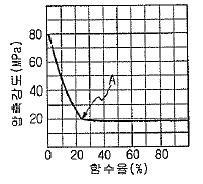
- 항복점
- 탄성한계
- 절대건조상태
- 섬유포화점
(정답률: 62%)
38. 다음 폭약중에서 동해(凍害)를 입히게 가장 쉬운 것은?
- 칼릿
- ANFO
- 니트로글리세린
- T.N.T
(정답률: 61%)
39. 시멘트의 강도 시험(KS L ISO 679)에 따라 시멘트의 압축강도 시험을 위한 공시체를 제작하고자 할 때, 사용하는 시멘트의 양이 450g이면 필요한 표준사의 양은?
- 900g
- 1150g
- 1350g
- 1500g
(정답률: 55%)
40. 금속 방식법 중 비금속 도포법에 속하지 않는 것은?
- 방청 도료 도포
- 아스팔트 도포
- 모르타르 도포
- 확산 침투법
(정답률: 52%)
3과목: 건설시공학
41. 말뚝기초에서 부마차력이 발생하는 원인이 아닌 것은?
- 팽창성 점토지반일 때
- 지표면침하로 지하수취가 저하될 때
- 점성토가 사질토 위에 놓일 때
- 표면적이 작은 말뚝으로 시공할 때
(정답률: 56%)
42. 아래의 표에서 설명하는 댐 기초처리 방법은?
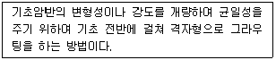
- 콘택트 그라우팅
- 블랭킷 그라우팅
- 커튼 그라우팅
- 컨솔리데이션 그라우팅
(정답률: 70%)
43. 빝라면 보호공법 중 돌쌓기 공법에서 줄눈에 모르타르를 사용하고 뒤채움에 콘크리트를 사용하는 방식은?
- 메쌓기
- 찰쌓기
- 정층(整層) 쌓기
- 부정층(不整層) 쌓기
(정답률: 71%)
44. 연약지반 개량공법 중 진공압밀공법의 특징에 대한 설명으로 틀린 것은?
- 상부지반이 초연약할 경우 성토하중 재하없이 압밀을 촉진시킬 수 있다.
- 깊은 심도의 연약층 하부에까지 진공시키기 어려우므로 깊은 연약층에는 부적합하다.
- 진공으로 탈수시키므로 정적하중에 의한 자연배수보다 빠른 속도로 배수가 가능하며 일반 탈수공법에 비해 압밀기간을 상당히 단축시킬 수 있다.
- 압밀기간중은 주야로 펌프를 가동시키므로 야간의 유지관리, 소음대책이 필요하다.
(정답률: 40%)
45. 무한궤도형 불도저 전중량이 22.95t, 접지 길이 270cm, 궤도 폭이 50cm 일 때 접지압은 얼마인가?
- 0.42 kg/cm2
- 1.65 kg/cm2
- 1.25 kg/cm2
- 0.85 kg/cm2
(정답률: 34%)
46. 사질토 재료로 하여 30000m3 의 쌓기를 할 경우의 굴착 및 운반토량은 얼마인가? (단, L=1.25, C=0.9)
- 굴착토량 : 33333m3, 운반토량 : 41666m3
- 굴착토량 : 34333m3, 운반토량 : 43666m3
- 굴착토량 : 36333m3, 운반토량 : 45666m3
- 굴착토량 : 38333m3, 운반토량 : 47666m3
(정답률: 82%)
47. 자연함수비 12%인 흙으로 성토하고자 한다. 시방서에는 다짐한 흙의 함수비를 18%로 관리하도록 규정하였다면, 매층마다 1m2당 약 몇 ℓ의 물을 살수해야 하는가? (단, 1층의 다짐 두께는 20cm 이고, 토량 변화율 C=0.9 이며, 원지반 상태에서의 흙의 단위중량은 1.7t/m3)
- 30ℓ
- 17.5ℓ
- 20.5ℓ
- 25.5ℓ
(정답률: 34%)
48. 옹벽의 높이가 5m 이상으로 높고 역T형옹벽에서 옹벽벽체의 강도가 부족할 경우에 채택되는 옹벽은?
- 중력식 옹벽
- 블록옹벽
- 부벽식 옹벽
- 반중력식 옹벽
(정답률: 78%)
49. 네트워크(network)를 작성하는데 반드시 고려해야할 사항으로 틀린 것은?
- 선행 작업
- 후속 작업
- 원가 작업
- 병행 작업
(정답률: 49%)
50. 흙막이 구조물 등의 계측에서 계측 위치를 선정할 때의 위치선정이 잘못된 것은?
- 중요한 구조물이 인접하여 있는 위치
- 지하수위의 상승, 하강이 빈번하지 않는 위치
- 공사에 의한 계측기의 훼손이 적은 위치
- 흙막이 구조물이나 지반 조건이 특수한 위치
(정답률: 43%)
51. 아스팔트 포장 중 실코트(seal coat)의 목적이 아닌 것은?
- 마찰의 감소
- 내수성증진
- 표층 노화방지
- 미끄럼방지
(정답률: 43%)
52. 토질이 점성토이거나, 아스팔트 포장의 끝손질등에 다음의 어떤 다짐기계가 가장 유리한가?
- 탠덤 로울러
- 마캐덤 로울러
- 진동 로울러
- 타이어 로울러
(정답률: 80%)
53. 아래의 표에서 설명하는 성토 시공법은?
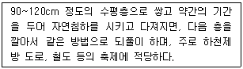
- 후층 쌓기
- 전방층 쌓기
- 비계층 쌓기
- 물다짐 공법
(정답률: 39%)
54. 터널 시공법 중 쉴드공법의 특징에 대한 설명으로 틀린 것은?
- 지하의 깊은 곳에서 시공이 가능하다.
- 지질의 영향을 받지 않는다.
- 소음과 진동의 발생이 적다.
- 곡선부 시공이 가능하며 막장 붕괴에 대한 안정성이 높다.
(정답률: 69%)
55. 터널의 보강을 위한 숏크리트(Shotcrete)에서 건식법의 특징으로 틀린 것은?
- 분진 발생량이 많다.
- 리바운드(Rebound)량이 적다.
- 운반거리를 습식법 보다 길게 할 수 있다.
- 작업원의 숙련도에 따라 품질변동이 심하다.
(정답률: 67%)
56. 다음 중 옹벽의 안정검토 항목에 포함되지 않는 것은?
- 활동에 대한 안정
- 전도에 대한 안정
- 지반 지지력에 대한 안정
- 수동토압에 대한 안정
(정답률: 75%)
57. 교통하중이나 포장 등 상부하중을 최종적으로 지지하는 포장의 기초부분을 무엇이라 하는가?
- 보조기층
- 동상방지층
- 중간층
- 노상층
(정답률: 50%)
58. 품질관리 기법 중 Histogram 으로 알 수 없는 것은?
- 측저치의 분포형
- 공정의 이상
- 측정치의 분산
- 측정치의 평균
(정답률: 69%)
59. 연야기반 처리공법 중 웰포인트 공법의 특징으로 틀린 것은?
- 중력배수 공법이다.
- 모래 및 실트질 지반에 효과적이다.
- 일시적 지반처리 공법이다.
- 배수 심도가 6m 이상이면 다단식으로 설치한다.
(정답률: 32%)
60. 두께가 얇은 연약 점토 지반에 반 투과약의 중공원통을 삽입하여 그 원통에 농도가 높은 용액을 넣어 연약 점토 속의 수분을 흡수시켜 지반을 개량하는 공법은?
- 압성토 공법
- 동결 공법
- 침투압 공법
- 디프 웰 공법
(정답률: 44%)
4과목: 토질 및 기초
61. 어떤 점토 사면에 있어서 안정계수가 4 이고, 단위중량이 1.5t/m3, 점착력이 0.15 kg/cm2 일 때 한계고는?
- 4m
- 2.3m
- 2.5m
- 5m
(정답률: 47%)
62. 흙의 건조단위중량이 1.60 g/cm3 이고 비중이 2.64인 흙의 간극비는?
- 0.42
- 0.60
- 0.65
- 0.64
(정답률: 35%)
63. 다음의 흙중에서 2차 압밀량이 가장 큰 흙은?
- 모래
- 점토
- Silt
- 유기질토
(정답률: 36%)
64. 다음 중 얕은 기초는?
- Footing기초
- 말뚝기초
- Caisson기초
- Pier기초
(정답률: 66%)
65. 주동토압 계수를 KA, 수동토압계수를 KP, 정지토압계수를 KO라 할 때 그 크기의 순서로 옳은 것은?
- KA ＞ KO ＞ KP
- KP ＞ KO ＞ KA
- KO ＞ KA ＞ KP
- KO ＞ KP ＞ KA
(정답률: 72%)
66. 다음 투수층에서 피에조미터를 꽂은 두 지점 사이의 동수경사(i)는 얼마인가? (단, 두 지점간의 수평거리는 50m 이다.)
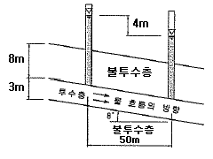
- 0.063
- 0.079
- 0.126
- 0.162
(정답률: 65%)
67. 평판재하 시험이 끝나는 조건에 대한 설명으로 잘못된 것은?
- 침하량이 15mm에 달할 때
- 하중강도가 현장에서 예상되는 최대 접지압을 초과할 때
- 하중강도가 그 지반의 항복점을 넘을 때
- 완전히 침하가 멈출 때
(정답률: 43%)
68. 도로지반의 평판재하 실험에서 1.25mm 침하될 때 하중강도가 2.5kg/cm2 이면 지지력계수 K는?
- 2 kg/cm3
- 20 kg/cm3
- 1 kg/cm3
- 10 kg/cm3
(정답률: 43%)
69. 현장에서 채취한 흐트러지지 않은 포화 점토시료에 대해 일축압축강도 qu=0.8kg/cm2의 값을 얻었다. 이 흙의 점착력은?
- 0.2kg/cm2
- 0.25kg/cm2
- 0.3kg/cm2
- 0.4kg/cm2
(정답률: 58%)
70. 전단응력을 증가시키는 외적인 요인이 아닌 것은?
- 간극수압의 증가
- 지진, 발파에 의한 충격
- 인장응력에 의한 균열의 발생
- 함수량 증가에 의한 단위중량 증가
(정답률: 33%)
71. 다음 그림과 같은 샘플러(sampler)에서 면적비는? (단, Ds=7.2cm, De=7.0cm, Dw=7.5cm)
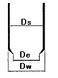
- 5.9%
- 12.7%
- 5.8%
- 14.8%
(정답률: 23%)
72. 어떤 점성토에 수직응력 40kg/cm2를 가하여 전단시켰다. 전단면상의 간극수입이 10kg/cm2이고 유효응력에 대한 점착력, 내부마찰각이 각각 0.2kg/cm2, 20° 이면 전단강도는?
- 6.4 kg/cm2
- 10.4 kg/cm2
- 11.1 kg/cm2
- 18.4 kg/cm2
(정답률: 27%)
73. 그림과 같은 지표면에 10t 의 집중하중이 작용했을 때 작용점의 직하 3m 지점에서 이 하중에 의한 연직응력은?
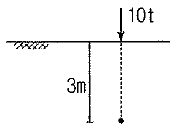
- 0.422 t/m2
- 0.531 t/m2
- 0.641 t/m2
- 0.708 t/m2
(정답률: 38%)
74. 함수비 20%인 자연상태의 흙 2400g을 함수비 25%로 하고자 한다면 추가해야 할 물의 양은?
- 100g
- 120g
- 400g
- 500g
(정답률: 19%)
75. 어느 흙댐의 동수구배가 0.8, 흙의 비중이 2.65, 함수비 40%인 포화토인 경우 분사현상에 대한 안전율은?
- 0.8
- 1.0
- 1.2
- 1.4
(정답률: 23%)
76. 그림과 같이 2개층으로 구성된 지반에 대해 수평방향 등가투수계수는?(오류 신고가 접수된 문제입니다. 반드시 정답과 해설을 확인하시기 바랍니다.)
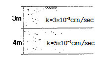
- 3.89×10-4cm/sec
- 7.78×10-4cm/sec
- 1.57×10-3cm/sec
- 3.14×10-3cm/sec
(정답률: 39%)
77. 다음 중 점성토 지반의 개량공법으로 부적당한 것은?
- 치환공법
- Sand drain공법
- 바이브로 플로테이션공법
- 다짐모래말뚝공법
(정답률: 74%)
78. 다짐에 대한 설명으로 틀린 것은?
- 조립토는 세립토보다 최적함수비가 적다.
- 조립토는 세립토보다 최대 건조밀도가 높다.
- 조립토는 세립토보다 다짐곡선의 기울기가 급하다.
- 다짐 에너지가 클수록 최대 건조밀도는 낮아진다.
(정답률: 46%)
79. 10개의 무리 말뚝기초에 있어서 효율이 0.8, 단항으로 계산한 말뚝 1개의 허용지지력이 10t일 때 군항의 허용지지력은?
- 50t
- 80t
- 100t
- 125t
(정답률: 80%)
80. 다음 중 얕은 기초의 지지력에 영향을 미치지 않는 것은?
- 지반의 경사
- 기초의 깊이
- 기초의 두께
- 기초의 형상
(정답률: 32%)